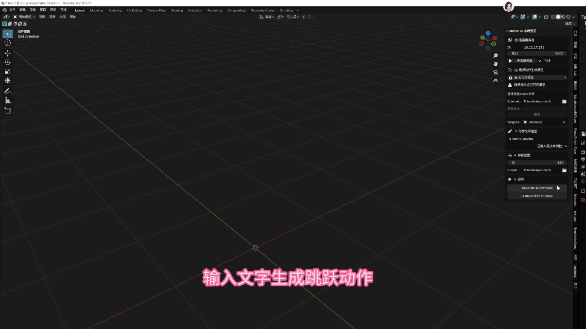

首页
我们的产品
产品亮点

- 自然语言驱动 — 输入"一间带落地窗的北欧风格卧室"，自动生成完整室内场景
- 双轨制资产管线 — 本地 AI2-THOR 预置库 + 云端 Objathor 海量资产库
- 非阻塞异步生成 — 生成过程不卡顿 Unity 主线程，实时监控任务进度
- 物理落地对齐 — 自动赋予 Collider、射线吸附，场景"即开即用"
- 低门槛部署 — Docker 部署，Unity 插件三步完成场景生成

- 文本到动作 — 输入"一个人向前走然后跳起来"，自动生成对应骨骼动画
- MoMask 深度学习 — 基于掩码建模的离散动作生成，支持多种动作风格
- Blender 原生集成 — 作为 Blender 插件运行，无缝融入 3D 创作工作流
- BVH 格式支持 — 支持 BVH 动作文件的导入、导出与转换
- 热加载机制 — 支持运行时模块热更新，加速开发迭代
应用场景
具身智能训练
为机器人导航、抓取等算法提供海量多样化 3D 训练场景
医疗 / 工业仿真
快速搭建模拟环境，结合物理引擎进行交互训练
教育科研
生成标准化场景与角色动画，便于学术可复现
数字内容创作
提示词快速生成室内原型与角色动作，缩短开发周期